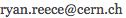

Ryan Reece, Ph.D.
Postdoctoral Fellow
Santa Cruz Institute for Particle Physics
This is my space on the web
Hi! I’m Ryan. I am a postdoctoral researcher at the Santa Cruz Institute for Particle Physics (SCIPP), working with the ATLAS experiment at CERN.
I have experience in data science, pattern recognition, statistical modeling, statistical inference, petabyte data reduction, and machine learning.
Previously as a graduate student at Penn, also with ATLAS, I helped commission the Transition Radiation Tracker (TRT), a sub-detector of the ATLAS tracker, during the start-up of the Large Hadron Collider (LHC) in 2009-2012. In July of 2012, the ATLAS and CMS experiments both announced discovering a new particle consistent with the long-sought-after Higgs boson, a key to explaining electroweak symmetry breaking in the Standard Model of particle physics.
My research has primarily focused on supporting and optimizing the reconstruction of hadronic tau decays, and searching for exotic new physics in ditau and diphoton events, including for signs of Grand Unified Theories and Supersymmetry. Many theories of physics beyond the Standard Model have revolutionary implications for the concepts of symmetry and space-time, and for our understanding of the early universe.
Research Interests
- Data science and visualization
- Machine learning
- Statistical inference
- Searches for new physics
- Measuring properties of the Higgs boson
- Hadronic tau reconstruction and identification
- Philosophy of science and science communication
A figure I drew with Kyle Cranmer of the big-picture of the flow of ATLAS data.
Current projects I am focussed on:
- Searching for evidence of supersymmetry in diphoton events
- Research in applications of machine learning for particle identification with ILC-CLIC simulation data
Previous focuses:
- Tau lepton identification and physics
- Observation and cross section measurement of SM Z→ττ
- Searching for exotic Higgs and Z’→ττ events
- Member of the ATLAS Physics Office helping manage paper submissions to journals, review talks/posters, and keeping publication statistics for the collaboration
- Commissioning, operations, and threshold calibration of the Transition Radiation Tracker (TRT)
Curriculum Vitae
- My brief resumé: html, pdf.
- My full academic CV: html, pdf.
- My selected list of publications.
- My slides for my selected talks.
- My selected software projects at github and my github profile: github.com/rreece
Thesis
My graduate research in particle physics was on the reconstruction and identification of hadronic tau decays with the ATLAS experiment, measuring the SM Z→ττ production cross section in proton-proton collisions at √s = 7 TeV, and searching for new physics in high-mass ditau events. You can download my thesis here.
Contact
Directly
- email: 
- skype: ryan.reece
- cell: +1-817-888-7010
Addresses
| UCSC Office | Home |
|---|---|
|
Ryan Reece (Nat.Sci.2 #317) Santa Cruz Institute for Particle Physics University of California 1156 High St. Santa Cruz, CA 95064 |
Ryan Reece 116 Princeton St. Santa Cruz, CA 95060 |
My web presence elsewhere
- reece.scipp.ucsc.edu – my webpage about my research at UCSC
- my blogs
- statisticalsignificance.net – my blog (still trying to get this going)
- philosophy-in-figures.tumblr.com – my micro-blog on philosophy using only figures
- bamf-thinkers.tumblr.com – my micro-blog on inspiring thinkers
- my professional and social media